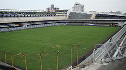
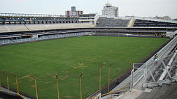

Santos Futebol Clube
O Santos Futebol Clube, popularmente conhecido como Santos, é um clube poliesportivo brasileiro sediado na cidade litorânea de Santos. Fundado em 14 de abril de 1912, tornou-se no futebol um dos clubes mais bem-sucedidos do Brasil e reconhecidos mundialmente. O Santos ficou famoso na década de 60 pelos vários títulos internacionais e nacionais conquistados e por ter revelado Pelé, considerado o melhor jogador do século pela FIFA e também o maior artilheiro da história do Santos e da Seleção Brasileira.
Suas cores são o branco e o preto, sendo que o seu uniforme tradicional é inteiramente branco. Manda as suas partidas em seu próprio estádio, a Vila Belmiro, mas ocasionalmente desloca seus jogos ao Pacaembu. Seus maiores rivais no futebol são o Corinthians, o Palmeiras e o São Paulo.
Ao longo de sua história, o Santos conquistou um grande número de títulos internacionais, com destaque para os Mundiais de 1962 e 1963, as Copas Libertadores de 1962, 1963 e 2011 (recordista brasileiro ao lado de Grêmio e São Paulo), a Copa Conmebol de 1998, a Supercopa dos CampeõesIntercontinentais de 1968, a Supercopa Sul-Americana de 1968 e a Recopa Sul-Americana de 2012. No cenário nacional é octacampeão brasileiro, somando cinco Taças Brasil conquistadas consecutivamente de 1961 a 1965, o Torneio Roberto Gomes Pedrosa de 1968 e os Campeonatos Brasileiros de 2002 e 2004. Ainda no âmbito nacional, o clube possui uma Copa do Brasil vencida em 2010, totalizando nove conquistas nacionais. Outros títulos importantes incluem cinco Torneios Rio-São Paulo e 22 Campeonatos Paulistas, tornando-se o maior campeão desde a profissionalização desta competição. Ao todo, somando competições oficiais, amistosas e outras taças, o clube possui 305 conquistas.
O Santos foi eleito pela FIFA em 2000, o quinto maior clube de futebol do Século XX, sendo o melhor clube das Américas na lista e também recebeu no ano de seu centenário na câmara dos deputados em Brasília pela FIFA, o prêmio de "maior clube sul-americano do Século XX", o Santos também é um dos quatro clubes do país que nunca foram rebaixados para a segunda divisão, além de ser o clube brasileiro que mais enfrentou estrangeiros na história. É também o único clube brasileiro a ser campeão estadual, nacional, continental e mundial no mesmo ano, em 1962, e o primeiro e único a conquistar a tríplice artilharia no futebol brasileiro: estadual, brasileiro e Copa do Brasil. Outro feito único do clube é ser o que mais marcou gols na história do futebol mundial, tendo sido o primeiro a alcançar a marca de 12 mil gols.

 
